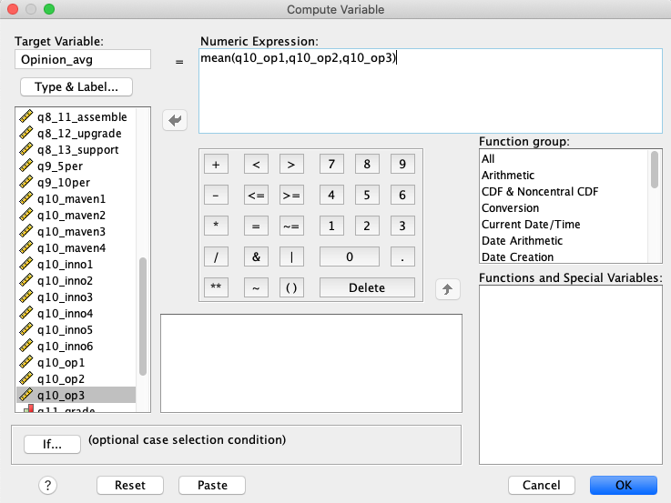

2 Descriptive Statistics, Graphs and Charts in SPSS
Data: Dell.sav (available on Moodle).
2.1 Learning objectives
The aim of this second lab exercise is to get you familiar with the SPSS program in terms of further descriptive statistics and basic computations. Through completing this lab you will be able to:
- Explore a data set and produce descriptive statistics in graph format.
- Produce descriptive statistic output.
- Compute a new variable based on the data provided.
Last time we focused on producing tables, in this lab we are now focusing on producing charts and instead of using the Analyze menu we will be using the Graphs menu.
2.2 Charts
You can use the charts from the commands already undertaken in lab 1, however if you want to explore other charts or customize a chart you should use the specifically developed chart tool. If you use SPSS ver 28 and below, click Graphs\(\rightarrow\)Legacy dialogs and then select the type of chart that you want. Starting from SPSS ver 29, SPSS removes the Legacy dialogs where you will see list of graphs that you can use after clicking Graphs.
To start off with, try a pie chart for gender (q14_gender), a bar chart for level of education (q11_grade) and a box plot for satisfaction (q4_sat).
Make sure that you use appropriate titles for your charts and label the axes accordingly. Try exploring counts and percentages as well as the different chart types.
When each dialogue box appears you need to select the correct summary. For the bar chart you want to select a simple bar chart with “summaries for groups of cases”, you also want “summaries for groups of cases” for the pie chart but for the box plot you should select “summaries for separate variables”.
If you want to explore putting data labels on your charts and for instance changing the color, in the output widow double click on the chart and it will open up in an editor view as the following screen shot shows

Which type of chart is best suited to the following types of data: nominal, ordinal, interval or ratio?
2.3 Descriptive Statistics
Let’s now try using the Descriptives function using the commands Analyze\(\rightarrow\)Descriptive statistics\(\rightarrow\)Descriptives. Here you can calculate mean, standard deviations and other measures of central tendency and dispersion
Why not try and explore the satisfaction of DELL customers (q4_sat) and also the amount that customers have spent on internet in the 12 month (q16_spent)?
2.4 Computing New Variables
It is also important to be able to perform basic manipulations of the data. The most important manipulation is the creation of new variables. Marketing research data is typically collected through the use of multiple item scales. The data from the multiple item scale is then averaged into a single composite measure. Most of the DELL questionnaire is developed from scales used in marketing literature. You should practice creating composite variables for concepts such as Market Maven, Opinion Leadership, and Innovativeness. You can identify which items capture which concept from the variable name which is best seen from the variable view which you can click to from the bottom left hand corner of the screen.
2.5 Reliability Analysis - Computing Cronbach’s alpha
Before creating a new composite variable it is important to check that the items exhibit internal consistency reliability (also discussed in the second lecture). You can do this by selecting the menu options Analyze\(\rightarrow\) Scale\(\rightarrow\)Reliability Analysis. You then select each of the items used to measure the construct.
Conduct a reliability analysis for Opinion Leadership (Variable names: q10_op1, Q10_op2, Q10_op3). If the alpha value given in the output is 0.7 or above then you can create a new composite measure by averaging the items together, knowing that all the items get well as a group.
If the alpha is below 0.7 it may be because some items in the scale are reversed coded, or do not get well with the rest. In order to find out which scale items need to be reversed or removed, when the alpha dialog box is open click the statistics tab and then check Scale if item deleted.
The alpha value for Opinion Leadership is 0.927 and therefore the three items can be averaged. To do this use the menu commands Transform\(\rightarrow\)Compute. The new variable will appear at the end of the dataset so please look for it in the data view. Note that you will be able to name the new variable whatever you like but I would suggest calling it Opinion_avg.

Why not try and explore the new variable you just created? (e.g., report mean, standard deviation, inspect the shape of its distribution, create a boxplot)
2.6 Video
2.7 Readings
Feick, L. F., & Price, L. L. (1987). The market maven: A diffuser of marketplace information. Journal of Marketing, 51(1), 83-97.
Goldsmith, R. E., Flynn, L. R., & Goldsmith, E. B. (2003). Innovative consumers and market mavens. Journal of Marketing Theory and Practice, 11(4), 54-65.
3 SPSS Lab 2: Quick Task Guide
3.1 📊 Core Analytical Tasks
| Task / Objective | SPSS Menu Path | Key Variable Examples | Key Notes & Shortcuts |
|---|---|---|---|
| Create & Customize Charts | Graphs → Select graph |
q14_gender (Pie)q11_grade (Bar)q4_sat (Box Plot) |
Chart Type Logic: - Bar/Pie: Use “Summaries for groups of cases”. - Box Plot: Use “Summaries for separate variables”. - Edit: Double-click output chart to open editor for colors, labels, titles. |
| Generate Descriptive Statistics | Analyze → Descriptive Statistics → Descriptives... |
q4_satq16_spent |
Outputs N, Mean, Std. Deviation, Min, Max. |
| Check Scale Reliability (Cronbach’s Alpha) | Analyze → Scale → Reliability Analysis... |
q10_op1, q10_op2, q10_op3 |
Rule: Alpha ≥ 0.7 = reliable. Diagnose: In dialog, click Statistics → check Scale if item deleted. |
| Compute New Composite Variable | Transform → Compute Variable... |
MEAN(q10_op1, q10_op2, q10_op3) → Opinion_avg |
Prerequisite: Only compute after reliability check (Alpha ≥ 0.7). Use MEAN() function. |
| Explore a New Variable | Combine: Descriptives + graph |
Opinion_avg |
Report mean/std. deviation and visualize distribution (e.g., with a boxplot). |
3.2 💡 Essential Concepts & Best Practices
3.2.1 1. Choosing the Right Chart
- Nominal Data (categories, e.g.,
gender): Pie Charts or Bar Charts. - Ordinal Data (ordered ranks, e.g.,
education level): Bar Charts (order categories). - Interval/Ratio Data (scores/amounts, e.g.,
satisfaction,money spent): Histograms or Box Plots.
3.2.2 2. Composite Variable Workflow
Always follow this 3-step process when creating a scale from multiple items: 1. Reliability First: Run Reliability Analysis. Proceed only if Cronbach’s Alpha ≥ 0.7. 2. Compute Average: Use Transform → Compute Variable with the MEAN() function. 3. Explore the Result: Analyze your new variable (e.g., Opinion_avg) with Descriptives and charts.
3.2.3 3. Customizing Charts
For professional graphs, double-click any chart in the output to open the Chart Editor. You can then: * Add/modify data labels (counts, %). * Change colors, fill patterns. * Edit titles and axis labels. * Adjust scales and fonts.
3.3 ▶️ Step-by-Step Practice Tasks
- Charts: Create a pie chart for
q14_gender, a bar chart forq11_grade, and a box plot forq4_sat. Remember the different “Summaries” settings. - Reliability & Computation:
- Run
Reliability Analysisonq10_op1,q10_op2,q10_op3. - Verify Alpha is high (0.927), then compute
Opinion_avgusingCompute Variable.
- Run
- Explore: Run
DescriptivesonOpinion_avgand make a boxplot for it.
Need a cheat sheet for Workshop 3 (Crosstabs and t-tests)? Just ask!